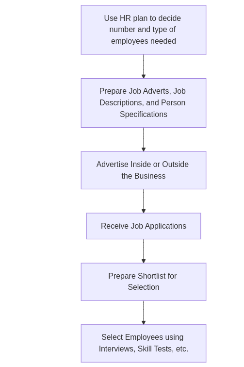

Human Resource Management
Human resource management
Human resource management(HRM) comprises the acquisition, training, motivation and reward of human resources within the business.
- Human resource management is the process of making the most efficient use of the organization’s employees.
Purpose and role of human resource management.
The main purpose of HRM is to achieve organisational objectives, such as growth and increased profitability by enhancing organisational performance.
- All elements of HRM, if implemented fully and operated properly, fulfill the needs of individual as well as of the organisation.
- Outcome of a sucessful HRM policy could be motivated and creative employees who are committed to the firm and who do not seek to leave. Under such sitution, a business should incur lower recruitment costs and enjoy higher level of productivity and a reduction in faulty products.
-
Businesses differ in their interpretation of HRM. Some see it as a confirmation of value of employees while others view employees as simply another resourcee to be used as effectively as possible.
- Two key reasons exist to highlight the importance of HRM within business:
- Nature of workforce has changed and greater use of part-time and peripheral workers is seen currently.
- Changes in organisational structure and use of techniques such as delayering and development of empowered teams. Delayering is reduction in the number of levels of hierarchy within an organisational structure.
Workforce planning
-
A workforce plan (human resource plan) means assessing the current workforce and actions necessary to meet the business’ future labour needs.
- Role of workforce plan:
- They help businesss to deal with changes by ensuring they have right employees.
- They help businesses to prepare for changes in workforce such as introduction to new production-line machinery.
- Workforce plans are designed to take proactive monitoring and not simply a reactive one.
Labour turnover
-
Turnover is measure of proportion of a workforce leaving their employment. It is calculated as percentage of a business’ workforce that leaves a business over a given period of time.
-
The formula for turnover is given by:
- Some level of turnover is inevitable. This has positive effect of being able to recruit employees to bring new ideas into a business.
- High level of labour turnover results in additional costs to recruit and train new employees. A business might need to increase pay in order to reduce the level of labour turnover.
- A business also suffers if labour turnover is too low. For example: in creative industries such as marketing, it is often helpful for business to have a stable and steady rate of turnover.
Recruitment and selection
Recruitment and selection is the process of filling in organization’s job vacancies by appointing new staff.
- The process of recruitment involves the following steps:
- Use HR plan to decide number and type of employees needed
- Prepare 1) Job adverts 2) Job descriptions 2) Person specifications
- Advertise inside the business (internal recruitment) or outside the business(external recruitment)
- Receive job applications
- Prepare shorlist for selection, matching applications and person specifications
- Select employees using interviews, skill tests etc.

Job descriptions list the duties and responsibilities associated with a particular job.
- A job description might contain the following information:
- The title of the post
- Employment conditions
- Some idea of tasks and duties
- The key aims and responsibilities of the job
- Where the job fits into the organization
- A job description is likely to form the basis of the employment contract.
An employment contract is a legal agreement between an employer and an employee setting forth the terms and conditions of the employment arrangements.
Person specification outlinese the skills, knowledge and experiencee necessary to fill a given position successfully.
- Person specification might include following information:
- Educational and professional qualifications required
- Character and personality needed
- Skills and experience wanted.
Methods of recruitment
- A number of options are available for recruitment:
- Job advertisements
- Online recruitments
- Employment agencies
Internal and external recruitment
- Internal recruitment offers following benefits:
- Candidates are familiar with business and its culture
- They might not require induction training
- It provides employees with opportunities for promotion
- It avoids cost of external advertisement
- Selection is easier as more is known about the candidates.
- However, due to limited pool of candidates, skills and experience may be insufficient.
Selection
- There are various methods of selection:
- Curriculum vitae, resumes, and application forms
- Interviews
- References
- Testing
- Asseesment centers
Redundancy and dismissal
Dismissal is disciplinary action taken against an employee in the form of termination
Redundancy takes place when an employee is dismissed because a job no longer exists.
- Redundancies can have following reasons:
- A business closes down
- The job of some employees are replaced by new technology
- A business moves some of its operations overseas
-
Redundancy can be voluntary or involuntary. A company offers voluntary redundancy near to time of retirement.
- In case of involuntary redundancy, certain procedure must be followed based on law of country. This might include redundancy pay.
Dismissal is a more general term than redundancy. A dismissal might be due to underperformance, long term illness, misconduct, or some substantial reason such as imprisonment.
Morale and welfare
-
Employee welfare is a broad term covering a wide range of facilities that are essential for the well-being of a business’ employees
-
Employee morale is the satisfaction felt by employees within the workplace
-
Work-life balance refers to the obligations placed on employees by employers that determine the amount of time that employees spend on work-related activities.
-
HRM can play a central role in developing and improving the morale and welfare of employees. Recruiting people with the intention of developing their skills and improving their performance throughout a long-term relationship is at the heart of what is called ‘soft’ human resource management.
Diversity and equality in the workplace
Diversity, in an employment context, refers to recognising the differences between individual employees and also the differences that may exist between groups of employees.
Equality is the circumstance in which all people are equal, particularly in relation to rights and opportunities in the workplace.
Training and development
Training is a process whereby an individual acquires job-related skills and knowledge.
Development refers to activities designed to increase employees’ skills, education, knowledge and abilities in the workplace.
- Types of training:
- Induction training: This training is intented to introduce an employee to the business including important policies, layout of workplace, new colleagues, and basic duties of the job.
- Off-the-job training: This involves training outside the workplace, at a college, university or some other training agency.
- On-the-job training: This form of training doesn’t require the employee to leave the workplace. They learn from experienced employees through observation and work shadowing.
Benefits of co-operation between management and the workforce
- Benefits to employers:
- Helping to develop a strong employer brand
- Enhancing employee morale
- Improving the business’ corporate image
- Strengthening competitiveness
- Benefits to employees:
- Financial benefits
- Job security
- The possibility of greater participation in decision-making
Trade unions
A trade union is an organisation of workers established to protect and improve the economic position and working conditions of its members through collective bargaining.
-
Collective bargaining is negotiation between employers and representatives of employees, normally trade union officials.
-
Goal of trade unions include:
- Maximising pay
- Achieving safe and secure working conditions
- Attaining job security
- Participating in and influencing decisions in the workplace.
Motivation
Motivation describes the factors that arouse, maintain and channel behavior towards the goal.
- Organization with huge work force possess high level of motivation tend to show the following characteristics: -Low level of absenteeism -Low level of labour turnover -Good relation between manager and employees -high level of labour productivity
Motivation theories:
- Motivation theories can be classified into two perspectives:
- Content theories
- Process theories
Content theories:
It consider what motivates people. The content theories can be divided into three schools of though.
Scientific school
Key Ideas:
- Motivation is an external factor achieved through money.
- Employees should be closely supervised and paid piece rate.
Taylorism:
- Study the work process to determine the most efficient production method.
- Observe and time the best workers in these methods.
- Train the remaining workers to the same standard.
- Implement differential pay rates and close supervision to increase productivity.
Taylors approach reduced inefficiency and productivity so business did not need as many employees. His ideas resulted in strikes and other forms of industrial action by dissatisfied workers.
Human relation school:
Key Idea:
-
This brought sociological theory into management and accepted that employees could be motivated by meeting their social needs.
-
Hawthorne effect:
- it is based on research conducted at western electric companies harthrone plant .
- it showed that employees were responding to the level of attention they were receiving as part of the investigation and working as a group
Neo-Human relation school:
Key idea:
- it highlighted the importance of fulfilling phycological needs to improve employe performance
Maslow’s hierarchy of needs:
- The hierarchy of needs is a theory that employees have successive requirements that can be fulfilled through work:
- Physiological needs: food, water, shelter, and clothing.
- Security needs: safe and secure working environment.
- Social needs: contact and friendship with other employees.
- Esteem needs: achievement, recognition, and self-respect.
- Self-actualization: to fulfill one’s potential completely.
Frederick Herzberg’s Two-Factor Theory:
-
This was the result of a study designed to test the view that people face two major sets of influences at work.
- Hygiene or Maintenance Factors: Related to the environment of work
- Company policy and administration
- Supervision of employees
- Working conditions
- Salary
- Relationship with fellow workers
- Motivators: Related to the job itself and can be used to motivate
- Personal achievement of goals and targets
- Recognition of achievement
- Interest in work itself
- Responsibility for greater and more complex duties
- Personal growth and advancement
Herzberg’s crucial finding was that hygiene factors do no lead to motivation but without them employees may be dissatisfied.
David McClelland’s Theory of Needs:
- Argued that an individual’s motivation depends upon their needs, which are determined by their experiences.
- Identified three types of motivational needs:
- Achievement motivation
- Authority/power motivation
- Affiliation motivation
Process theories
examine the process of motivation and are concerned with ‘how’ motivation occurs.
Victor Vroom’s expectancy theory.
Vroom argues that motivation depends on empoloyees’ expectations of the result of their efforts.
Vroom’s model consists of three major elements:
- Expeectancy: Confidence that employees may have in their ability to complete a particular task Expectancy leads to better performance.
- Instrumentality: Belief that completion of a particular task will lead to desired outcome. Intrumentality leads to outcome/reward.
- Valence: Strength of a person’s desire to achieve a specific outcome. It refers to personal objectives.
Motivation methods in practice
Financial motivators
- Taylor saw pay as the primary motivating factor for all workers and supporteed the use of piece rate
- Maslow saw pay as a reward which permitted employees to meet the lower needs on their hierarchy
-
Herzberg saw pay as a hygiene factor and a possible cause of dissatisfaction
- Time based pay: Payments based on the number of hours worked. Simple but may lead employees becoming clock-watchers.
- Salary and wages: Salaried workers are not normally required to work a set number of hours, though their contract may state a minimum of number of hours.
- Salaries: expressed in annual terms and paid monthly
- Wages: usually paid weekly and workers are required to be at work for a specified number of hours. They are paid a higher rate for overtime.
- Piece-rate: Employees are paid according to the quantity they produce. It may lead to increased productivity but may cause decrease in quality.
- Bonuses and commission: Bonuses are additions to pay linked to individual or team peerformancee measured against target. Commission is the payment for the quantity that is produced by an individual employee.
- Profit sharing: It is a reward system under which employees receive some part of the business’ profits. Profits are paid to employees in thee form of cash or company shares.
- Performance related pay(PRP): Under PRP, employees are paid for their contribution to the organization, rather than their status within it. The problem with PRP is performance is often difficult to measure, feeling of dicrimination, and businessees not putting sufficient funds.
- Variable pay: It is a more flexible schemee where potential rewards for star employees are greater.
- Fringe benefits: Extras that employees receive as part of their reward package. Sometimes referred to as perks.
Non-financial motivators
- Job redesign:
- Job enrichment occurs when employees’ jobs are redesined to provide then with more challenging and complex tasks, which is also called vertical loading. Job enlargement, also called horizonal loading, increases number of similar task instead of increasing complexity of task.
- Employee empowerment : providing greater control over their work life.
- Teamworking: Breaking producttion into large units insted of relying on division of labour.
- Training and development
- Employee participation: Involvement of employees in process of decision making. It can be done in form of quality circles, work councils, employee shareholders, and autonomous work groups.
- Promotion and status
Management
Management is planning, organizing, directing and controlling all or part of a business interprise.
Functions of management
- The four principal functions of management are:
- Planning
- Organizing
- Directing
- Controlling
Planning:
Evaluating the company’s current status and where it would like to be in the future.
- establishing objectives or targets
- gathering forecasts of key data
- making plans for functional areas
- estimating the likely resources needs
Organizing
Determining the internal organizational structure, establishing and maintaining relationship, as well as allocating necessary resources.
Directing
Motivating and communicating
Controlling
Setting standards using the company’s objectives and evaluating and reporting performance.
Henri Fayol’s theories of management
Henri Fayol was a French mining engineer who developed a theory of business administration.
- He established fourteen key principles of maagement and five primary functions which supported his fourteen principles.
Fayol’s fourteen principles
- Division of work
- Authority
- Discipline
- Unity of command
- Unity of direction
- Subordination of individual interests to the general interest
- Remuneration
- Centralization
- Scalar chain
- Order
- Equity
- Stability of tenure of personnel
- Initiative
- Esprit de corps: Team spirit
Fayol’s functions of management
- Planning
- Organising
- Commanding
- Co-ordinating
- Controlling
Mintzberg’s roles of management
Ten roles, three categories
- Interpersonal management
- Figurehead: represent their colleagues.
- Leader
- Liaison: Communicate with internal and external contacts.
- Informational management
- Monitor: Search for relevant information.
- Disseminator: pass on valuable information to others in the organization.
- Spokesperson: Represents and speaks for their organization.
- Decisional management
- Entrepreneur: plan and initiate change.
- Disturbance handler: Deal with unexpected and crisis.
- Resource allocator
- Negotiator
Contribution of managers to business performance
- Some are:
- Setting suitable objectives
- Allowing subordinates to work to their full potential
- Making good quality decisions
Styles of management
- Based on how much managers
1
listen to
- Autocratic: managers control information and make decisions alone.
- Paternalistic: Managers take decisions in what they believe are the best interests of their subordinates.
- Democratic: Information is shared and team members participate in decision-making.
- Laissez-faire: Subordinats are free to make their own decisions.
There is not a single perfect style of management. Best managers adopt a style suitable to the circumstance.
Douglas McGregor’s Theory X and Theory Y
He classified managers into two categories based on what they believed.
-
Theory X managers believe workers were motivated solely by money and had no real desire to work.
-
Theory Y managers believe that workers seek satisfaction from employment and not just money, wish to contribute,and willing to commit.
-
McGregor did not believe in the views expressed by Theory X managers.